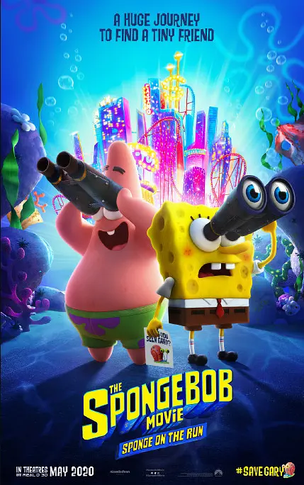
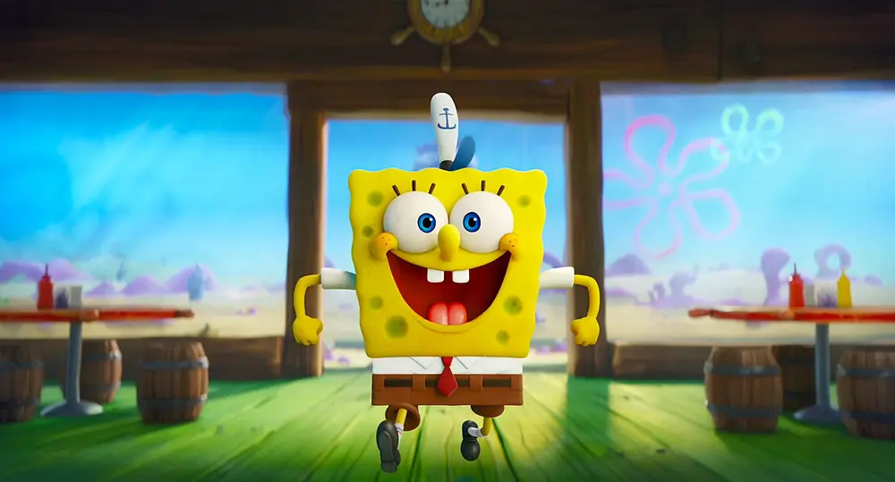
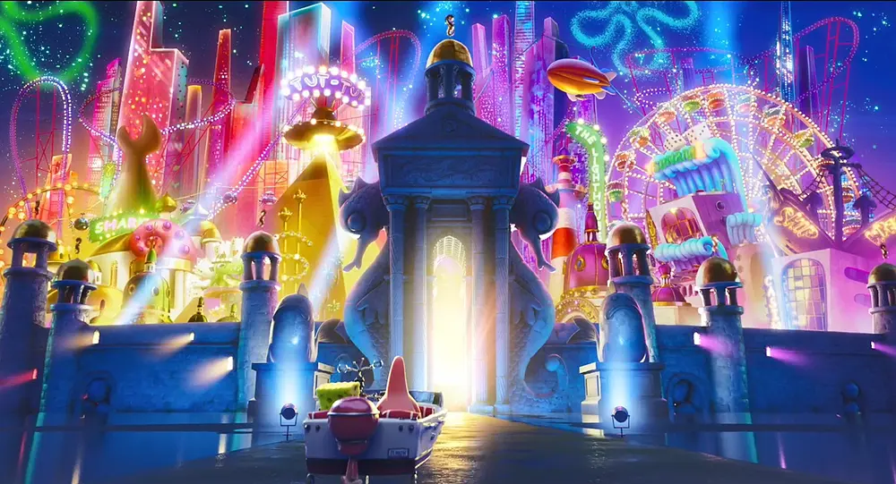
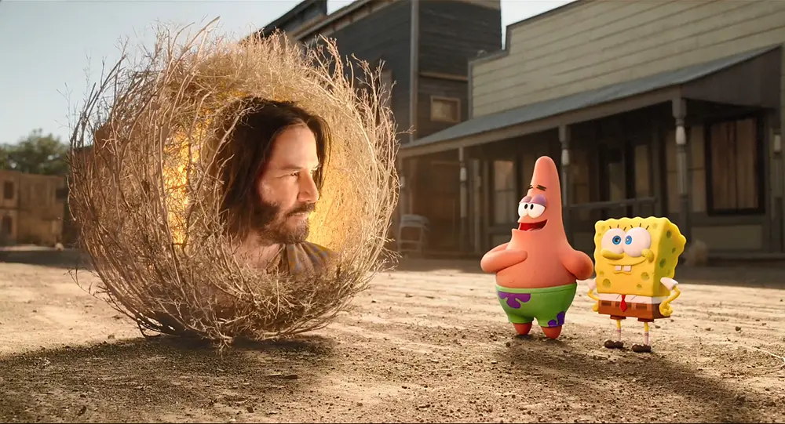
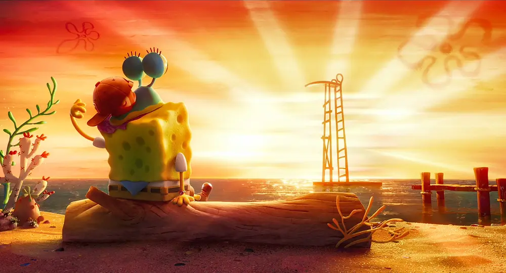
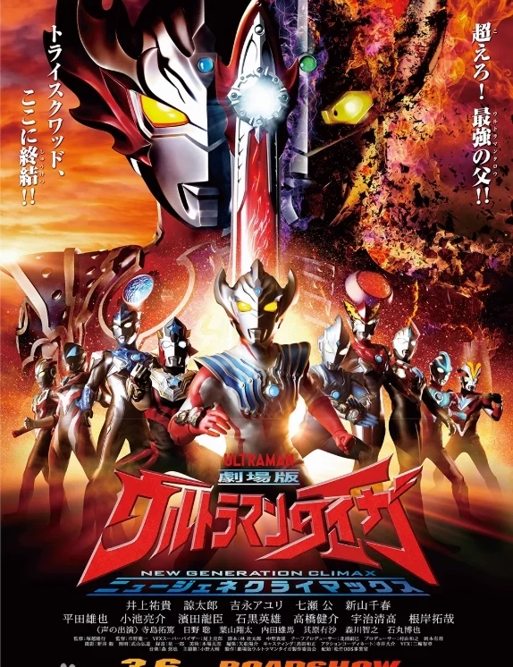
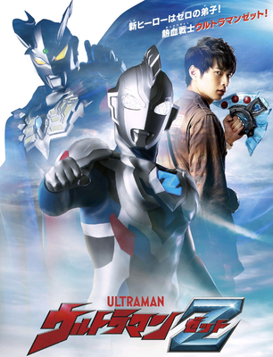
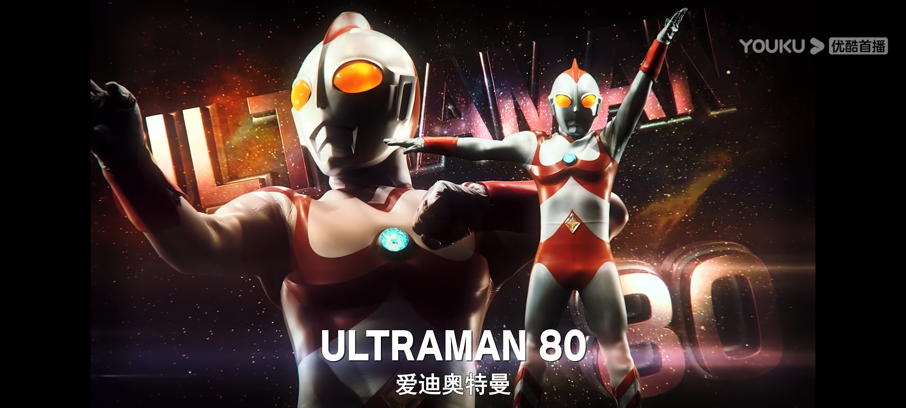
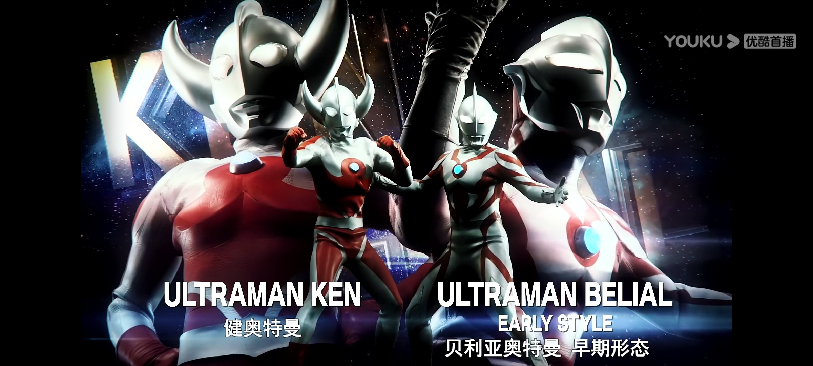
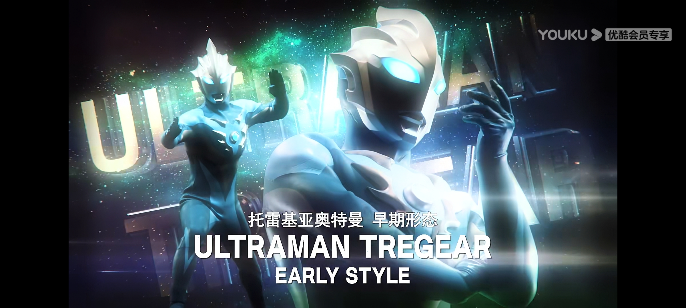

海绵宝宝·营救大冒险

今年是《海绵宝宝》动画片系列开播21周年。
绵哥自初登荧幕以来，便收获了全世界各地观众的喜爱，成为最受欢迎的动画形象之一。
他很傻很天真，笑起来却能温暖人心;他能自嗨自乐，也为身边的朋友带来慰藉。海绵宝宝与派大星“相爱相杀”又不离不弃更成为无数
人心中的“友情典范”。这群生活在比奇堡、性格各异的家伙们让观众在捧腹大笑之余，也感受到他们幽默单纯里蕴藏的智慧。

在《海绵宝宝：营救大冒险》中，绵哥与派大星一起化身超级英雄，为营救爱宠小蜗义无反顾，前往神秘之地，揭露邪恶势力的惊天阴谋。
《海绵宝宝：营救大冒险》是该电影系列时隔四年的回归之作，消息一出立即引发粉丝热切期待。
相信全新的海绵故事不仅会使无数人的童年回忆更加充盈，也能为成年世界抹去烦恼、实现治愈

海绵宝宝与派大星前往亚特兰蒂斯救小蜗

他们遇到了新角色

就是他————鼠尾草“圣人”
最后了

点击此处返回顶部
如果想要了解更多->这里
奥特银河格斗·巨大阴谋
《奥特银河格斗：巨大的阴谋》是由2020圆谷株式会社《奥特曼》系列出品的特摄剧 ，是《奥特银河格斗：新世代英雄》的续作.
讲述了发生在《泰迦奥特曼剧场版：新生代之巅》之后、《泽塔奥特曼》之前的这一时间线里发生的故事。


登场角色
.jpg)


简介
『银河救援队』的精锐·利布特奥特曼还是是文明观察员的时候的故事。利布特和麦克斯奥特曼一起，在某个行星上察觉到异样的气息……但是那是燃烧着复仇的敌人的陷阱。为了保护利布特，麦克斯陷入危机，与此同时，爱迪和尤莉安、索拉在行星伽农被鲁格赛特袭击。
那只不过是揭开了某个“巨大阴谋”的序幕！在暗中活动着神秘的黄金巨人到底是？利布特能拯救麦克斯，击退敌人的威胁吗？！
很久以前，是数万年前发生的奥特大战争的时代。（本章开头的前序）健与贝利亚和邪恶的宇宙人，怪兽战斗。健斥责了会对敌人下死手、毫不留情攻击的贝利亚，但他似乎什么也没听进去。
在安培拉星人率领的怪兽军团和光之国展开激战的过程中，健（之后的奥特之父）和贝利亚都取得了不折不扣的战功，十分活跃，最后也都得到了应有的职位。
虽然是一起战斗的战友，但不知什么时候健被任命为宇宙警备队队长，与得到玛丽（奥特之母）的心的健相比，贝利亚不肯承认实力、地位等各方面差距的扩大，产生了嫉妒之心。
他追求更大的力量，开始暴走……就在那时，神秘的黄金巨人塔尔塔洛斯出现了。
“你不想改变你的命运吗？”……

另外......还有这个反派奥特曼

点击这里返回顶部
如果想要了解更多->这里
这还不够？